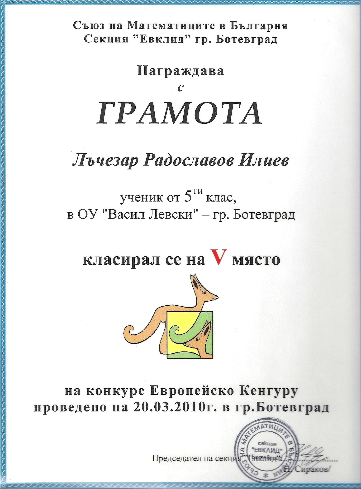
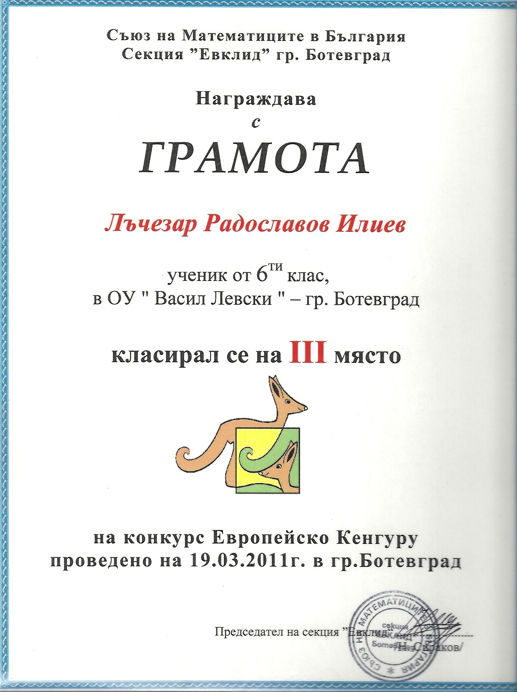
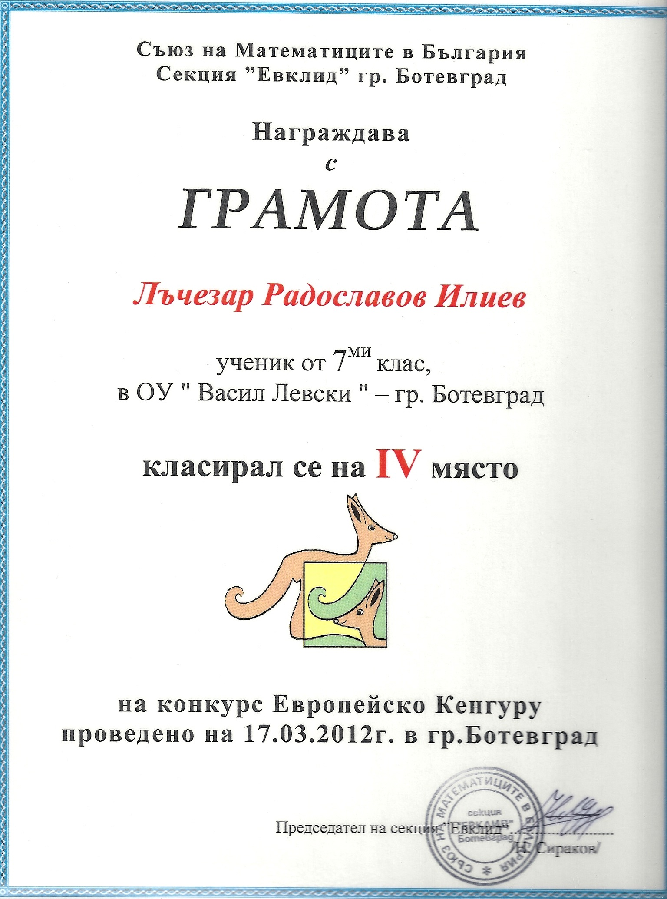
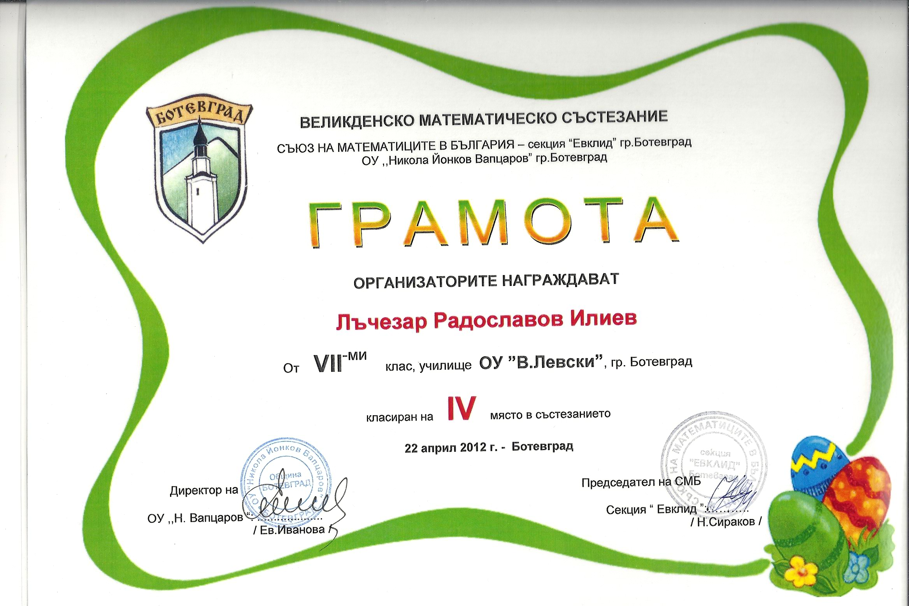
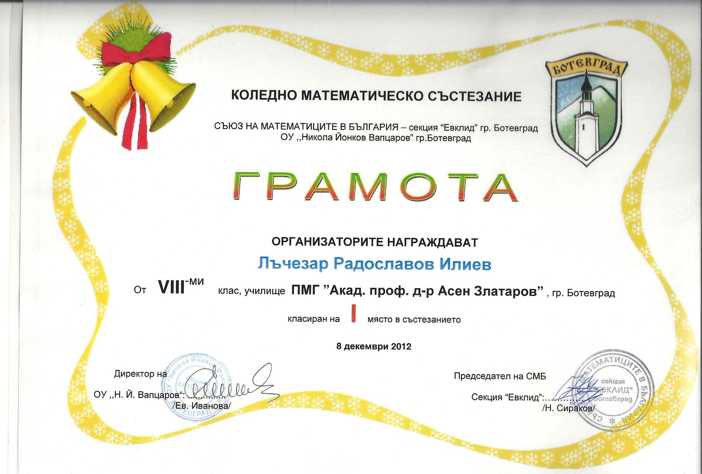
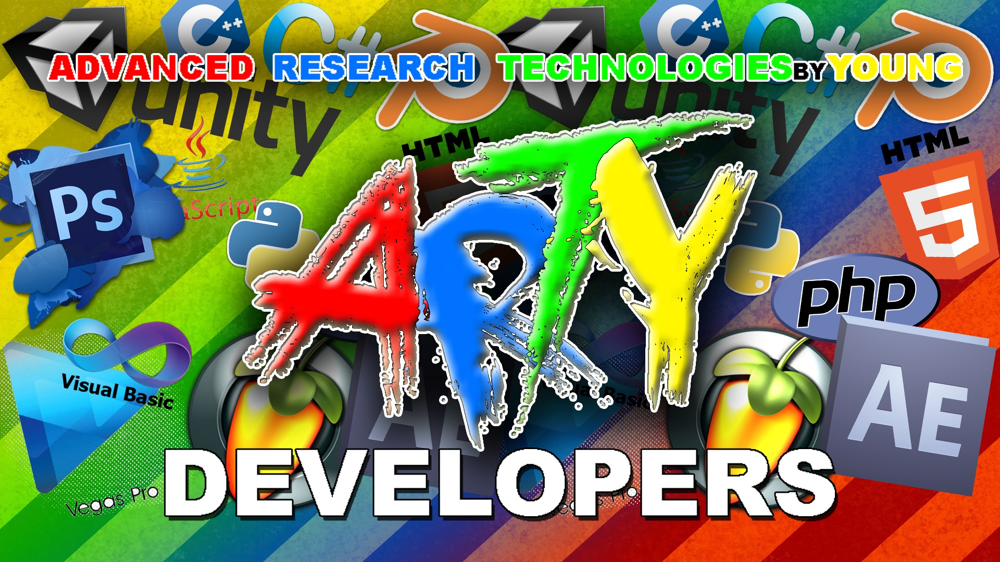

Биография
Лъчезар Илиев
10-ти Януари 2022
През годините научих много неща и разбрах, че независимо от обстоятелствата,
стига да има желание и амбиция, човек винаги може да натрупа знания, да се развива в определена насока и впоследствие да
постигне своите цели, да се реализира в обществото. Пътят към успеха е път на труда, път на лишения, път на постоянство и не
всеки може да го измине. Талантът е онова нещо, което подпомага усърдната работа и само по себе си притежава силата,
възможността, умението, необходими на даден човек да гради пред себе си бъдеще.
Още от ранна възраст винаги съм проявявал интерес към математиката и информационните технологии, но с времето те
са се превърнали в неизменна част от моето битие. На пръв поглед тези два предмета са коренно различни като материя и
съдържание, но същевременно имат толкова общо помежду си. Развитието ми в сферата на информационните технологии би
било невъзможно без помощта на рационалното, алгоритмично мислене, на което ме е научила математиката.
Преди да напредна в областта на ИТ-сферата дълго време отделях специално внимание на математиката като
самостоятелен предмет. Всяка година редовно участвах в различни състезателни формати, като „Европейско Кенгуру“ (5 клас - 5то
място, 6 клас - 3то място, 7 клас - 4 то място), Коледно математическо състезание (8 клас - 1во място) и Великденско математическо
състезание (7 клас - 4то място).





С постъпването си в Профилирана природо-математическа гимназия "Акад. проф. д-р Асен
Златаров", паралелно с напредъка по математика, започнах да навлизам все по-дълбоко в същината на предметите Информатика и
Информационни технологии. Четири години подред (2013г.-2017г.) взех участие в Националната олимпиада по Информационни
технологии. На първата, която се проведе през 2013г., участвах с авторски проект - Операционна система “ARTY” - работещ,
концептуален модел на истинска операционна система с вградени функции и приложения. Бях единственият в моята категория от
Ботевград, който успя да стигне до финалния етап. Следващата година с предметът Информатика започнах да програмирам –
предимно на езика Visual Basic и C++. Като част от Ученическо творческо студио “ARTY” разработките ми с всяка следваща година
ставаха все по-креативни и впечатляващи, като дори някои от тях се представяха на Националната олимпияда.

Извън училище проявих интерес да се занимавам с 3D (триизмерна) технология с Unity3D Game Engine, благодарение
на което понастоящем мога да използвам езиците JavaScript и C#. Заедно със съученик направихме 3D образователна игра от
първо лице „The Island“, с която през 2015г. година участвахме на Националната олимпияда по Информационни технологии, където получихме максимален брой
точки на представянето и се класирахме. Продължихме да разработваме и надрграждаме същия проект и на 18.09.2015г. го представихме на
Международната конференция InfoTech 2015, на английски език пред професори и специалисти от различни държави. Издаде се
книга, в която са описани всички проекти, представени на конференцията, като в това число фигурира и нашият. Разполагам с
разработено от мен мобилно приложение (игра за Android). Имам малък опит с микроконтролер Arduino Uno – проект “LED
Night RAY“, представен на НОИТ през 2016г. Като част от уменията си по Информационни технологии включвам и
обработката на видео материал (монтажи), с което се занимавам от близо 7 години. През
свободното си време аранжирам и продуцирам предимно електронна музика с Fruity Loops Studio, но все още не съм я споделил
с по-широка аудитория.
Повече информация можете да откриете в останалите раздели на моя сайт. :)